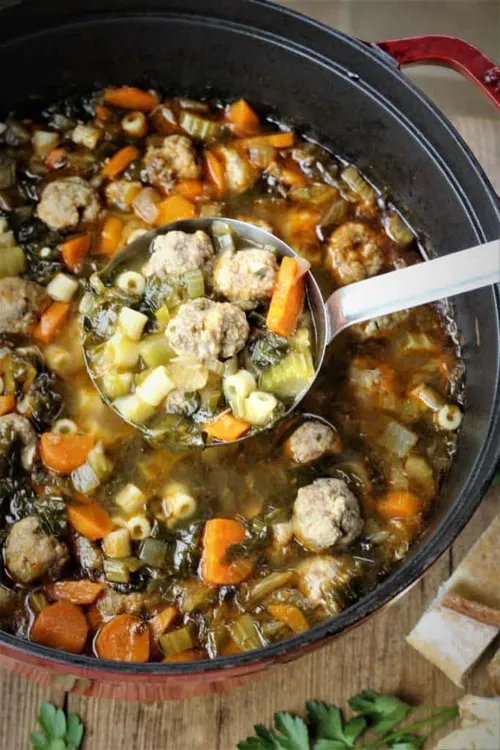

Meatball Escarole Soup

Ingredients
- Meatballs
- Chicken Broth
- Escarole
- Carrots
- Onion
- Celery
- Orzo
Instructions
- Finely slice the escarole
- Finely chop carrot
- Heat broth until boiling
- Stir in escarole, orzo, carrot, and meatballs and return to boil
- Reduce heat to medium and cook at slow boil, stirring frequently to prevent sticking, until pasta is tender yet firm to the bite, about 10 minutes
- Serve